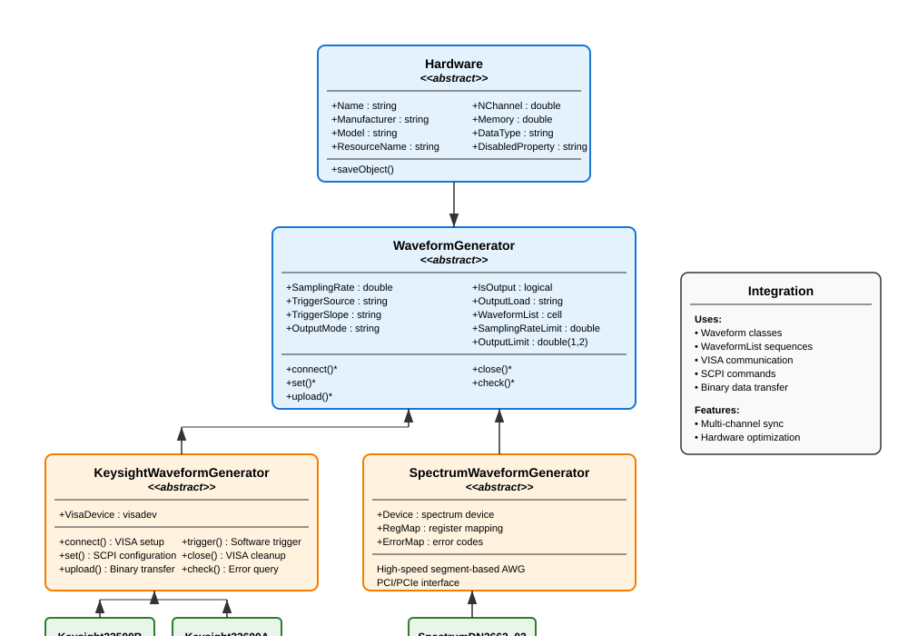

Waveform Generator#
The WaveformGenerator framework provides comprehensive hardware control for arbitrary waveform generators (AWGs) in experimental setups. This system bridges the software waveform generation capabilities with physical hardware devices, enabling precise control of experimental timing and signal generation.
Overview#
The WaveformGenerator framework consists of several layers:
Hardware abstraction: Common interface for all AWG devices
Vendor-specific implementations: Keysight and Spectrum AWG support
SCPI/driver integration: Direct hardware communication protocols
Waveform upload and sequencing: Efficient transfer of complex waveform sequences
Trigger and synchronization: Precise timing control for experimental coordination
The framework seamlessly integrates with the Waveform and WaveformList classes to provide end-to-end signal generation capabilities.
Class Hierarchy#
The WaveformGenerator system follows a hierarchical design pattern:
{kind=link}

Hardware Base Class#
All waveform generators inherit from the Hardware base class, which provides common functionality for instrument control:
Core Properties:
Name: Device nickname for identificationManufacturer: Vendor name (e.g., “Keysight”, “Spectrum”)Model: Specific model numberResourceName: VISA or connection resource identifierNChannel: Number of output channelsMemory: Available sample memory in pointsDataType: Sample data format (“uint8” or “double”)
Common Workflow:
All AWG classes follow the same operational sequence:
% 1. Create and configure the AWG
awg = Keysight33500B("TCPIP0::192.168.1.100::inst0::INSTR", name="MainAWG");
% 2. Connect to the hardware
awg.connect();
% 3. Configure settings
awg.set();
% 4. Upload waveforms
awg.upload();
% 5. Check status
status = awg.check();
% 6. Close connection when done
awg.close();
WaveformGenerator Abstract Base#
The WaveformGenerator abstract class extends Hardware to provide AWG-specific functionality:
Configuration Properties:
SamplingRate: Per-channel sampling rate in HzTriggerSource: “External”, “Software”, or “Immediate”TriggerSlope: “Rise” or “Fall” edge triggeringOutputMode: “Normal” or “Gated” output modeIsOutput: Per-channel output enable flagsOutputLoad: “50” ohm or “Infinity” (high impedance)WaveformList: Cell array ofWaveformListobjects per channel
Hardware Limits:
SamplingRateLimit: Maximum supported sampling rateOutputLimit: [min, max] output voltage range at 50Ω load
Abstract Methods:
All concrete AWG implementations must provide:
connect(): Establish device connectionset(): Apply configuration settingsupload(): Transfer waveforms to device memorycheck(): Query device status and errorsclose(): Clean shutdown and disconnect
Keysight AWG Implementation#
The Keysight implementation supports VISA-based AWGs using SCPI commands:
KeysightWaveformGenerator Base#
Provides common SCPI functionality for all Keysight AWGs:
Connection Management:
awg = Keysight33500B("TCPIP0::192.168.1.100::inst0::INSTR", name="AWG1");
awg.connect(); % Opens VISA session
Configuration:
% Multi-channel configuration
awg.SamplingRate = [250e6, 100e6]; % Different rates per channel
awg.TriggerSource = ["External", "Software"];
awg.TriggerSlope = ["Rise", "Fall"];
awg.OutputMode = ["Normal", "Gated"];
awg.OutputLoad = ["50", "Infinity"];
awg.IsOutput = [true, false]; % Enable only channel 1
awg.set(); % Apply all settings
Waveform Upload Process:
The upload process handles complex waveform sequences automatically:
% Create waveforms
sine1 = SineWave(frequency = 1000, amplitude = 1.0, duration = 0.01);
ramp1 = LinearRamp(startValue = 0, stopValue = 2, rampTime = 0.005);
% Create waveform list
sequence = WaveformList("ExperimentSequence", ...
waveformOrigin = {sine1, ramp1}, ...
samplingRate = 250e6);
% Assign to AWG channel
awg.WaveformList{1} = sequence;
% Upload with automatic scaling and triggering
awg.upload();
Advanced Features:
Automatic scaling: Waveforms are scaled to utilize full DAC range
Trigger insertion: Leading/trailing zeros added for clean triggering
Sequence management: Complex multi-segment sequences supported
Binary transfer: Efficient SCPI binary block transfers
Error handling: Automatic error detection and recovery
Keysight33500B Specific#
Concrete implementation for the Keysight 33500B series:
awg = Keysight33500B("TCPIP0::192.168.1.100::inst0::INSTR", name="33500B_Main");
% Device specifications automatically configured:
% - 2 channels
% - 250 MHz sampling rate per channel
% - 16 MB memory
% - ±10V output range at 50Ω
Typical Usage Example:
% Complete experimental sequence
awg = Keysight33500B("TCPIP0::192.168.1.100::inst0::INSTR", name="ExpAWG");
awg.connect();
% Configure for external triggering
awg.TriggerSource = ["External", "External"];
awg.OutputMode = ["Gated", "Normal"];
awg.set();
% Channel 1: Control voltage sequence
initRamp = LinearRamp(startValue = 0, stopValue = 5, rampTime = 0.1);
holdConst = ConstantWave(amplitude = 5.0, duration = 2.0);
finalRamp = LinearRamp(startValue = 5, stopValue = 0, rampTime = 0.2);
controlSeq = WaveformList("ControlSequence", ...
waveformOrigin = {initRamp, holdConst, finalRamp});
awg.WaveformList{1} = controlSeq;
% Channel 2: Modulated RF signal
carrier = SineWave(frequency = 1e6, amplitude = 1.0, duration = 2.3);
modulator = SineWave(frequency = 1000, amplitude = 0.3, duration = 2.3);
rfMod = SineWaveModulated(frequency = 1e6, amplitude = 1.0, duration = 2.3);
rfMod.AmplitudeModulation = WaveformList("AM_Mod", waveformOrigin = {modulator});
awg.WaveformList{2} = WaveformList("RF_Channel", waveformOrigin = {rfMod});
% Upload and start
awg.upload();
% Software trigger if needed
awg.trigger();
% Monitor status
if awg.check()
disp('AWG operating normally');
end
% Clean shutdown
awg.close();
Spectrum AWG Implementation#
The Spectrum implementation provides high-speed AWG control for Spectrum Instrumentation cards:
SpectrumWaveformGenerator Base#
Provides driver integration for Spectrum AWGs:
Key Features:
High-speed operation: Up to 1.25 GS/s sampling rates
Large memory: Multi-gigasample memory capacity
PCI/PCIe interface: Direct computer integration
Segment-based sequencing: Hardware-optimized waveform management
16-bit DAC resolution: High dynamic range output
Driver Requirements:
The Spectrum implementation requires the vendor MATLAB driver:
% Ensure Spectrum driver is on MATLAB path
addpath('C:\SpectrumDriver\MATLAB');
awg = SpectrumDN2662_02("PCI::SPCM0", name="SpectrumAWG");
Segment Management:
Spectrum AWGs use segment-based waveform storage:
% All enabled channels must have equal segment counts
awg.IsOutput = [true, true];
% Each channel gets identical segment structure
sine1 = SineWave(frequency = 100e6, amplitude = 1.0, duration = 1e-6);
sine2 = SineWave(frequency = 150e6, amplitude = 0.8, duration = 1e-6);
awg.WaveformList{1} = WaveformList("Ch1_Seq", waveformOrigin = {sine1});
awg.WaveformList{2} = WaveformList("Ch2_Seq", waveformOrigin = {sine2});
SpectrumDN2662_02 Specific#
High-speed 2-channel AWG configuration:
awg = SpectrumDN2662_02("PCI::SPCM0", name="HighSpeedAWG");
% Device specifications:
% - 2 channels
% - 1.25 GS/s sampling rate
% - 2 GB memory
% - 80 mV to 2V output range at 50Ω
High-Speed Applications:
% High-frequency signal generation
awg = SpectrumDN2662_02("PCI::SPCM0", name="RFGenerator");
awg.connect();
% Configure for maximum speed
awg.SamplingRate = [1.25e9, 1.25e9];
awg.set();
% High-frequency waveforms
rf_signal = SineWave(frequency = 100e6, amplitude = 1.0, duration = 10e-6);
chirp = LinearFrequencyRamp(startFreq = 50e6, stopFreq = 200e6, ...
amplitude = 0.8, duration = 5e-6);
% Upload high-speed sequence
awg.WaveformList{1} = WaveformList("HighSpeed", waveformOrigin = {rf_signal, chirp});
awg.upload();
Advanced Features#
Multi-Channel Synchronization#
Synchronize multiple channels for complex experimental protocols:
awg = Keysight33500B("TCPIP0::192.168.1.100::inst0::INSTR", name="SyncAWG");
awg.connect();
% Synchronized trigger configuration
awg.TriggerSource = ["External", "External"];
awg.TriggerSlope = ["Rise", "Rise"];
awg.set();
% Phase-coherent signals
sine_0 = SineWave(frequency = 1000, amplitude = 1.0, phase = 0, duration = 0.1);
sine_90 = SineWave(frequency = 1000, amplitude = 1.0, phase = pi/2, duration = 0.1);
awg.WaveformList{1} = WaveformList("Phase_0", waveformOrigin = {sine_0});
awg.WaveformList{2} = WaveformList("Phase_90", waveformOrigin = {sine_90});
awg.upload();
Hardware-Optimized Sequences#
Utilize hardware repeat capabilities for efficient long sequences:
% Long periodic sequence with hardware optimization
shortPulse = TrapezoidalPulse(amplitude = 2.0, riseTime = 1e-6, ...
holdTime = 10e-6, fallTime = 1e-6);
optimizedSeq = WaveformList("Optimized", ...
waveformOrigin = {shortPulse}, ...
nPeriodPerCycle = 100, ... % Hardware repeats
isTriggerAdvance = true); % Trigger advance mode
awg.WaveformList{1} = optimizedSeq;
awg.upload();
Error Handling and Diagnostics#
Robust error detection and recovery:
try
awg.upload();
% Verify successful upload
if awg.check()
disp('Upload successful');
else
warning('Hardware error detected');
awg.set(); % Attempt recovery
end
catch ME
warning('Upload failed: %s', ME.message);
awg.close();
rethrow(ME);
end
Status Monitoring:
% Continuous monitoring during experiment
while experimentRunning
if ~awg.check()
warning('AWG error detected, attempting recovery');
awg.set();
awg.upload();
end
pause(1); % Check every second
end
Memory Management#
Efficient use of device memory for large sequences:
% Check memory constraints
awg = Keysight33500B("TCPIP0::192.168.1.100::inst0::INSTR", name="MemTest");
maxSamples = awg.Memory; % 16 MB = 16e6 samples
% Calculate sequence memory requirements
totalSamples = sum(cellfun(@(x) x.NSample, awg.WaveformList));
if totalSamples > maxSamples
warning('Sequence too large for device memory');
% Implement downsampling or segmentation
end
Best Practices#
Device Configuration:
- Always call connect() before other operations
- Use check() to verify successful operations
- Call close() for clean shutdown
Waveform Design: - Match sampling rates between waveforms and hardware - Consider hardware memory limitations for long sequences - Use hardware optimization features for repetitive patterns
Synchronization: - Use external triggering for multi-device synchronization - Configure trigger slopes consistently across channels - Allow sufficient trigger setup time
Error Recovery: - Implement try-catch blocks for critical operations - Use status checking for continuous monitoring - Have recovery procedures for common error conditions
Performance Optimization: - Use binary data transfer modes when available - Minimize waveform uploads during experiments - Cache frequently used waveform sequences
The WaveformGenerator framework provides a powerful, flexible interface for controlling arbitrary waveform generators in experimental setups. The object-oriented design ensures extensibility for new hardware while maintaining consistent operation across different vendors and models.